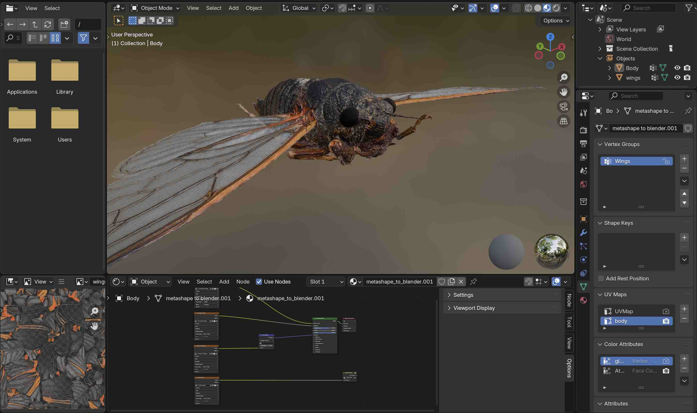
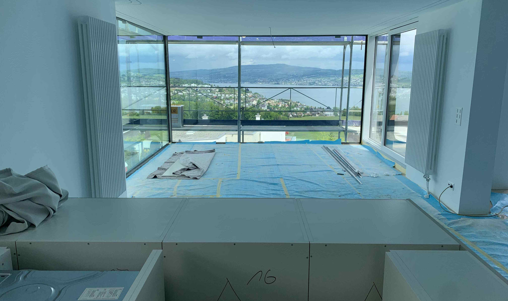
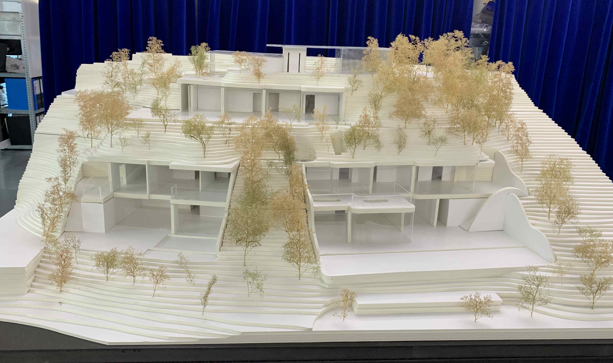

Im Zivildienst an der ETH Zürich erstellte ich 3D-Modelle von Insekten mittels Fotogrammetrie. Dabei werden Fotos der Insekten aufgenommen und mit Programmen wie Metashape, Meshmixer und Affinity Photo bearbeitet. Nach weiteren Anpassungen in Photoshop werden die finalen Modelle in Blender für Ausstellungen im Museum oder wissenschaftliche Zwecke weiterverarbeitet.

Donec eget ex magna. Interdum et malesuada fames ac ante ipsum primis in faucibus. Pellentesque venenatis dolor imperdiet dolor mattis sagittis magna etiam.

Das Modell stellt eine Villa mit drei Wohnparteien in Wollerau dar, die einen beeindruckenden Seeblick bietet. Der Entwurf wurde vollständig aus Kartonschaumplatten gebaut, was dem Modell eine präzise und strukturierte Ästhetik verleiht. Die Villa ist so gestaltet, dass jede der drei Wohneinheiten optimal von der Aussicht profitiert, während moderne Architektur mit funktionalen Wohnräumen kombiniert wird. Das Modell vermittelt eine klare Vorstellung der Raumaufteilung und des harmonischen Zusammenspiels von Natur und Architektur.“

Donec eget ex magna. Interdum et malesuada fames ac ante ipsum primis in faucibus. Pellentesque venenatis dolor imperdiet dolor mattis sagittis magna etiam.

Während unseres Törns von Brest nach Vigo segelten wir durch die Biskaya, wo wir leider mit schlechten Windverhältnissen zu kämpfen hatten und drei Tage offshore unterwegs waren. Trotz der schwierigen Bedingungen wurde die Reise von einem einzigartigen Erlebnis begleitet – wir wurden von Schweinswalen und Delfinen begleitet, die uns immer wieder besuchten und die raue See mit einem Hauch von Magie erfüllten.

Donec eget ex magna. Interdum et malesuada fames ac ante ipsum primis in faucibus. Pellentesque venenatis dolor imperdiet dolor mattis sagittis magna etiam.